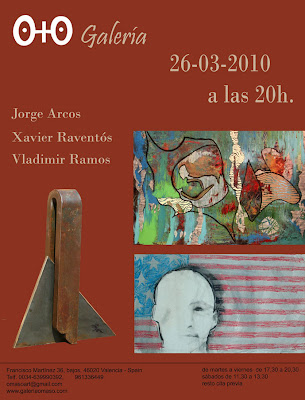
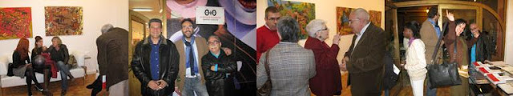

"Tres en Raya": Exposición del 26-03 a 26-04-2010
viernes, 26 de marzo de 2010
{kind=link}

Tres en raya
La galería O+O de Valencia, inaugura el próximo viernes 26 de marzo, a las 20.00 horas, la próxima exposición tres en raya, en la que participan los artistas Jorge Arcos, Xavier Raventós y Vladimir Ramos.

{kind=link}

VER VIDEO
El artista mexicano afincado en Arizona Jorge Arcos abre este trío. Sus pinturas abstractas reflejan una intensidad de electrificación cuando extrae lo reprimido e invisible, invitando al espectador a contemplar alguna faceta inescrutable de nuestro mundo, según palabras de Ruthie Tucker. Un trabajo de gran fuerza expresiva y colorido intenso no exento de humor y crítica. Artista formado en el dibujo, la pintura y el grabado, Arcos ha afirmado en alguna ocasión que “Soy un artista porque nací para serlo. Estoy vivo porque pinto”.
El catalán Xavier Raventós es el escultor del grupo. El historiador del arte Jaume Soler explica lo siguiente acerca de su obra: “Es una escultura personal, dura, decidida y contundente”. “La escultura de Raventós quiere ser muchas cosas, dentro de su sencillez formal. Y si el espacio ha de ser, verdaderamente, el eje vertebrador de la idea, una idea que funcione, que se articule y que se integre, la materia, por su peculiaridad, ha de sorprender”. Y continúa Soler: “Se mire por donde se mire, la obra de X. Raventós sigue una línea de parámetros en función de una línea de cambios, profunda, llena de intenciones, dialogando y sin complicaciones. Es la escultura ideal, real o imaginaria, en virtud de la cual el estatismo no tiene porque alterar, en ningún momento, su espíritu innovador y libre”. Raventós hace uso de los materiales reciclados debidamente transformados.
El artista plástico Vladimir Ramos reside en Lima (Perú). Ramos ha obtenido diferentes premios en su trayectoria y su currículo está salpicado de exposiciones dentro y fuera del país. Actualmente pinta, es docente a nivel superior y realiza proyectos de interrelación arte-sociedad. Laura Avendaño asegura que este artista “retoma la tradición de las mejores etapas en que el arte ha jugado un papel clave de denuncia y disconformidad. Rechazando una actitud pasiva, sus series aluden, casi sin excepción y de manera diversa, a la disolución del individuo en tanto ser humano y ciudadano de un mundo globalizado que avasalla sus derechos naturales”. Una obra comprometida con problemáticas sociales universales.